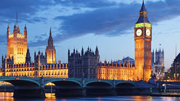
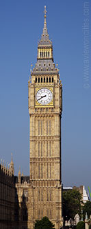
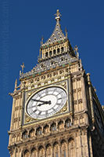

It is the most populous city in the United Kingdom, with a metropolitan area of over 13 million inhabitants. London is the capital and most populous city of England and the United Kingdom.Standing on the River Thames in the south east of the island of Great Britain,London has been a major settlement for two millennia. It was founded by the Romans, who named it Londinium.London's ancient core, the City of London, largely retains its 1.12-square-mile (2.9 km2) medieval boundaries. Since at least the 19th century, "London" has also referred to the metropolis around this core, historically split between Middlesex, Essex, Surrey, Kent, and Hertfordshire,which today largely makes up Greater London,governed by the Mayor of London and the London Assembly.London is a leading global city,in the arts, commerce, education, entertainment, fashion, finance, healthcare, media, professional services, research and development, tourism, and transport. It is one of the world's leading financial centres and has the fifth- or sixth-largest metropolitan area GDP in the world.  London is a world cultural capital.It is the world's most-visited city as measured by international arrivals and has the world's largest city airport system measured by passenger traffic.London is the world's leading investment destination,hosting more international retailers and ultra high-net-worth individuals than any other city.London's universities form the largest concentration of higher education institutes in Europe,and a 2014 report placed it first in the world university rankings. According to the report London also ranks first in the world in software, multimedia development and design, and shares first position in technology readiness. In 2012, London became the only city to have hosted the modern Summer Olympic Games three times.
The clock inside the tower was the world's largest when it was installed in the middle of the nineteenth century. The name Big Ben actually refers to the clock's hour bell, the largest of the clock's five bells. The other four are used as quarter bells.  Big Ben There were two bells cast as the clock tower's hour bell. A first, sixteen ton weighing bell was cast by John Warner and Sons in 1856. Since the Clock Tower was not yet completed, the bell was hung temporarily in the Palace Yard. The bell soon cracked so it was recast in 1858 in the Whitechapel Bell Foundry as a 13.5 ton bell. Unfortunately soon after this bell was placed in the belfry in July 1859, it cracked as well. This time, instead of yet again recasting the bell, the crack was repaired and a lighter hammer was used to prevent any more cracks. Big Ben Clock face Clock face  Big Ben, London View from Parliament Square The hour bell was probably named after Benjamin Hall, the First Commissioner of Works. Some sources however claim the bell was named after Benjamin Caunt, a British heavyweight boxing champion. The Clock The clock was the largest in the world and is still the largest in Great-Britain. The clock faces have a diameter of almost 25ft (7.5m). The hour hand is 9ft or 2.7m long and the minute hand measures 14ft (4.25m) long. The clock is known for its reliability, it has rarely failed during its long life span. Even after the nearby House of Commons was destroyed by bombing during World War II, the clock kept on chiming. The clock's mechanism, designed by Edmund Beckett Denison, has a remarkable accuracy. The clock's rate is adjusted by simply adding small pennies on the shoulder of the pendulum. The Tower The tower was constructed between 1843 and 1858 as the clock tower of the Palace of Westminster. The palace is now better known as the Houses of Parliament. The clock tower rises 316ft high (96m) and consists of a 200ft (61m) high brick shaft topped by a cast iron framed spire. The clock faces are 180ft / 55m above ground level.